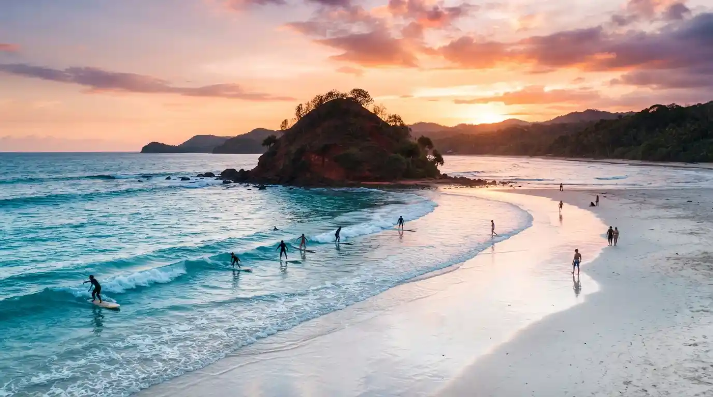

Panduan Wisata Pantai Pulau Merah Banyuwangi
Informasi lengkap seputar Pantai Pulau Merah, mulai dari rute, harga tiket, spot surfing terbaik, hingga tips berkunjung.

Pantai Pulau Merah adalah salah satu destinasi wisata pantai paling populer di Banyuwangi. Pantai ini terkenal dengan bukit kecil berwarna kemerahan yang menjadi ikon uniknya, serta ombak yang cocok untuk surfing. Terletak di Kecamatan Pesanggaran, pantai ini menawarkan pemandangan yang indah dengan pasir hitam keabu-abuan dan air laut yang jernih.
Selain surfing, Pantai Pulau Merah juga menjadi spot favorit untuk menikmati sunset yang spektakuler. Pengunjung dapat berjalan kaki ke bukit merah saat air surut, menikmati kuliner seafood segar di warung-warung sekitar pantai, atau sekadar bersantai menikmati deburan ombak dan angin laut yang menyegarkan.
Ringkasan Cepat
Informasi penting seputar Pantai Pulau Merah
Lokasi
Desa Sumberagung, Kecamatan Pesanggaran, Kabupaten Banyuwangi, Jawa Timur
Jarak
±80 km dari pusat kota Banyuwangi (sekitar 2 jam berkendara)
Tiket Masuk
Rp 10.000 per orang (hari biasa), Rp 15.000 per orang (akhir pekan/hari libur)
Jam Buka
06:00 - 18:00 WIB (setiap hari)
Waktu Terbaik
Sore hari untuk sunset, musim kemarau (April - Oktober) untuk surfing
Aktivitas Utama
Surfing, menikmati sunset, foto di bukit merah, kuliner seafood, berenang
Tips & Persiapan Berkunjung
- Datanglah sore hari sekitar pukul 16:00 - 17:30 untuk menikmati sunset yang spektakuler di Pantai Pulau Merah.
- Jika ingin surfing, pastikan Anda memiliki kemampuan dasar berenang. Ombak di Pulau Merah cukup besar dan cocok untuk surfer pemula hingga menengah.
- Bawa sunscreen dan topi untuk melindungi diri dari paparan sinar matahari yang cukup terik di area pantai.
- Saat air surut, Anda bisa berjalan kaki menuju bukit merah. Perhatikan kondisi pasang surut sebelum mencoba.
- Tersedia penyewaan papan surfing dan jasa instruktur surfing di sekitar pantai dengan harga terjangkau.
- Jangan lupa mencicipi kuliner seafood segar di warung-warung sekitar pantai, terutama ikan bakar dan lobster.
Galeri Foto
Keindahan Pantai Pulau Merah yang memukau
Peta Lokasi
Paket Wisata Terkait
Pilihan paket wisata untuk mengunjungi Pantai Pulau Merah
Open Trip Pasir Putih Pulau Merah
Jelajahi pantai terindah di selatan Banyuwangi. Nikmati pasir putih dan sunset memukau di Pulau Merah.
Lihat Detail
Private Trip Sunset Pulau Merah
Perjalanan santai menikmati sore hari di Pantai Pulau Merah dengan fasilitas kursi santai, kelapa muda, dan makan malam seafood.
Lihat DetailPertanyaan yang Sering Diajukan
Informasi umum seputar kunjungan ke Pantai Pulau Merah

Jam berapa Pantai Pulau Merah dibuka?
Pantai Pulau Merah umumnya dapat dikunjungi mulai pukul 06:00 WIB hingga 18:00 WIB setiap hari. Namun, banyak pengunjung yang datang lebih awal untuk menikmati sunrise atau sore hari untuk menikmati sunset yang indah.
Apakah Pantai Pulau Merah cocok untuk surfing pemula?
Ya, Pantai Pulau Merah memiliki ombak yang cukup ramah untuk surfer pemula hingga menengah, terutama di musim kemarau (April - Oktober). Tersedia juga jasa instruktur surfing dan penyewaan papan surfing di sekitar pantai dengan harga terjangkau.
Bisakah saya berjalan ke bukit merah?
Ya, saat air laut surut Anda bisa berjalan kaki menuju bukit kecil berwarna merah yang menjadi ikon pantai ini. Pastikan untuk memperhatikan kondisi pasang surut air laut sebelum mencoba, dan jangan memaksakan diri jika air mulai naik.
Apakah ada fasilitas di sekitar Pantai Pulau Merah?
Ya, di sekitar Pantai Pulau Merah tersedia berbagai fasilitas seperti warung makan dan seafood, toilet umum, area parkir, penginapan/homestay, serta penyewaan perlengkapan surfing. Anda juga bisa menemukan pedagang souvenir khas Banyuwangi di area pantai.
Siap Menjelajahi Pantai Pulau Merah?
Hubungi kami sekarang untuk merencanakan perjalanan Anda ke Pantai Pulau Merah. Kami siap membantu Anda mendapatkan pengalaman wisata pantai terbaik di Banyuwangi.